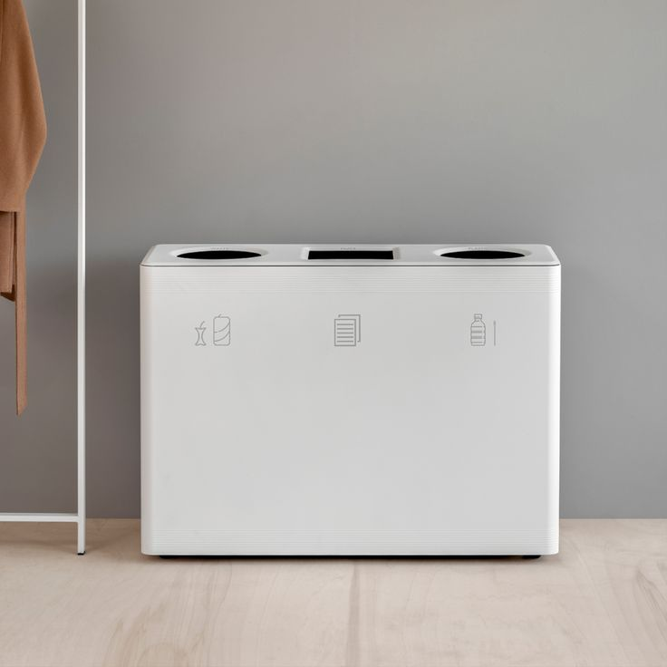

Karya ilmiah ini berfokus pada pengembangan Smart Solar Bin, sebuah inovasi dalam pengelolaan sampah yang mengintegrasikan teknologi energi terbarukan
Smart Solar Bin dirancang untuk meningkatkan efisiensi pengelolaan sampah dengan kemampuan mendeteksi dan memilah jenis sampah secara otomatis. Alat ini dilengkapi dengan panel surya yang berfungsi sebagai sumber energi utama, sehingga ramah lingkungan dan dapat beroperasi secara mandiri tanpa bergantung pada listrik konvensional.
Berikut adalah beberapa keunggulan utama dari Smart Solar Bin:
Dengan berbagai keunggulan ini, Smart Solar Bin tidak hanya menawarkan solusi inovatif untuk pengelolaan sampah tetapi juga berkontribusi pada keberlanjutan lingkungan dan efisiensi operasional dalam pengelolaan limbah di perkotaan.
Smart Solar Bin merupakan inovasi yang menjawab tantangan pengelolaan sampah di perkotaan dengan menggabungkan teknologi pintar dan energi terbarukan. Dengan keunggulan seperti efisiensi energi melalui penggunaan panel surya, kapasitas tampung yang besar berkat teknologi kompresi, serta sistem pemantauan yang canggih, Smart Solar Bin menawarkan solusi yang praktis dan ramah lingkungan.
Desainnya yang estetis dan fungsional tidak hanya meningkatkan pengalaman pengguna dalam membuang sampah, tetapi juga mendorong kesadaran masyarakat akan pentingnya pengelolaan limbah yang berkelanjutan. Dengan demikian, penerapan Smart Solar Bin di lingkungan perkotaan diharapkan dapat mengurangi dampak negatif dari limbah, meningkatkan tingkat daur ulang, serta mendukung upaya menuju kota yang lebih hijau dan berkelanjutan. Melalui penelitian ini, diharapkan bahwa Smart Solar Bin dapat menjadi model bagi inovasi pengelolaan sampah di masa depan dan memberikan kontribusi signifikan terhadap keberlanjutan lingkungan.